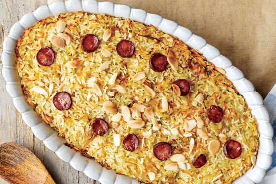

The 10 most voted recipes this week!
#1 Panquecas
15
mins
#2 Salada de atum com grão
20
mins
#3 Bacalhau com natas
60
mins

#4 Arroz de Pato
85
mins
#5 Frango com Limão
30
mins
#6 Crepes com morango e chantilly
15
mins
#7 Omelete com espinafres e tomate
25
mins
#8 Gelados de melancia
10
mins
#9 Macarons
26
mins
#10 Pizza com espinafres
30
mins